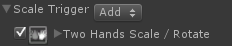
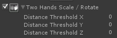
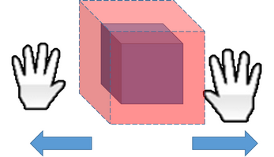
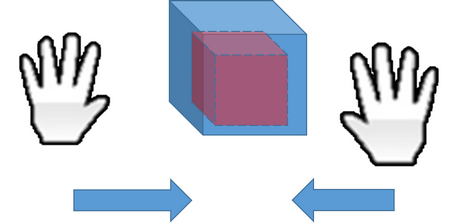

Scale Trigger and Rules |
Top Previous Next |
|
Scale Trigger and Trigger Values The Scale Trigger indicates that the user performed a scale interaction.
Scale Trigger Rules The Scale Trigger can work with the following rules:
 The rule fires whenever the user’s two hands are performing a scale gesture. This gesture is defined by moving the hands in 3D in the following manner:
 Figure 96: Move Hands Apart to Scale Up
 Figure 97: Move Hands Closer to Scale Down You can specify the minimal distance that the hands need to move from their initial location where they were detected to start the gesture. If the Distance Threshold is set to zero, the scaling will start immediately. Otherwise, it will start only when the distance between the hands passes the selected threshold.
|